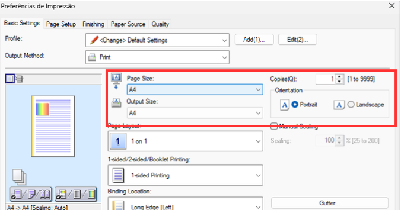
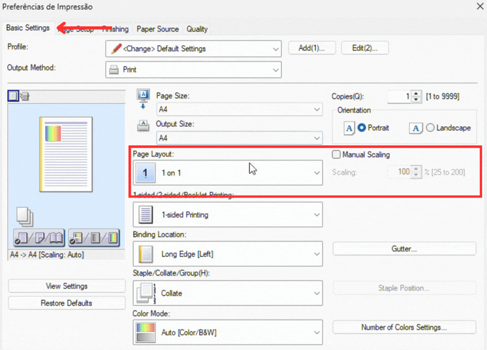
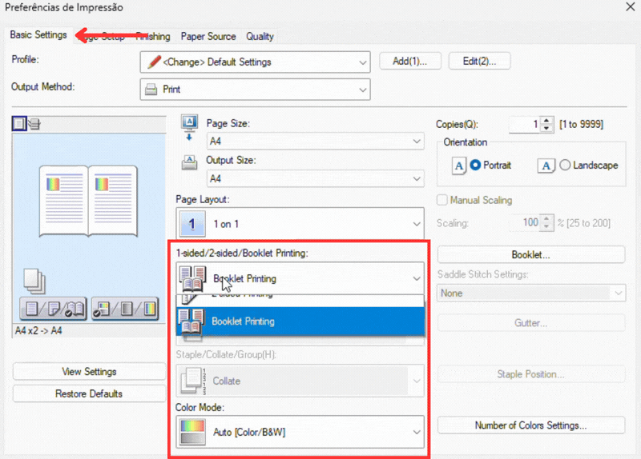
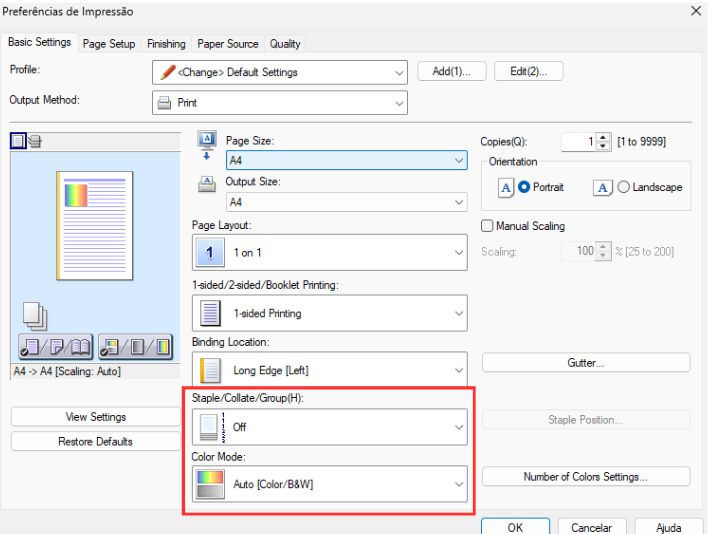
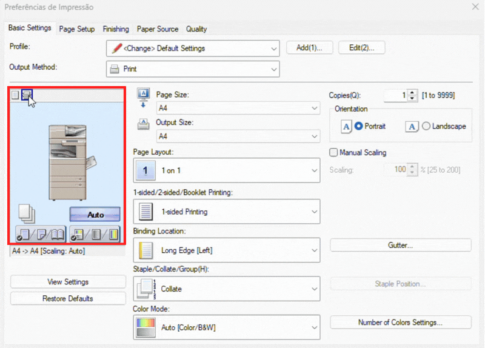
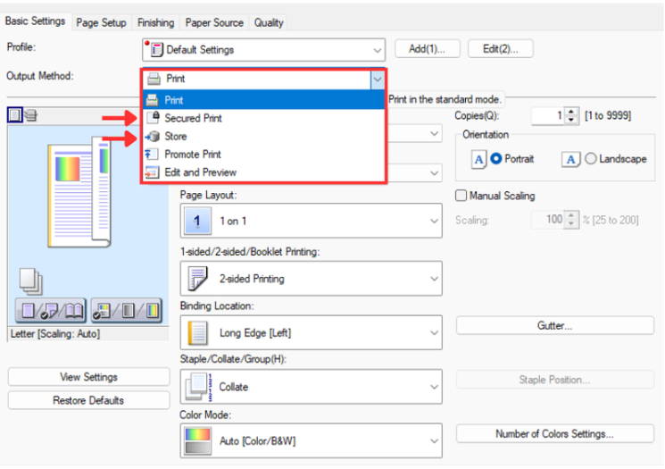
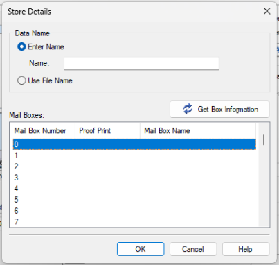
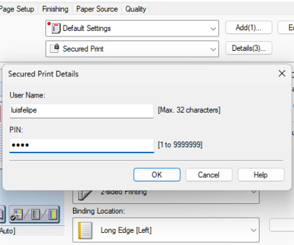
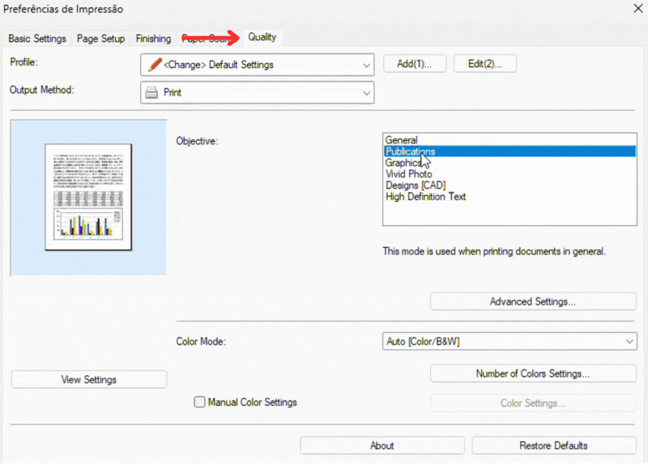
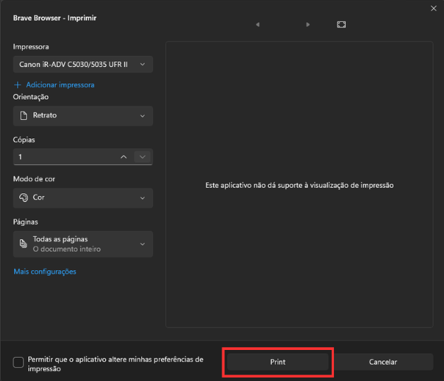

Canon iR-ADV C5035 / C5045
Impressão colorida, gavetas, frente e verso e organização correta das cópias.
Iniciando a Impressão
Com seu arquivo aberto clique no ícone de impressora ou use o atalho Ctrl + P. O primeiro passo é selecionar a impressora correta no campo "Destino".

Caso a Canon iR-ADV C5035 não apareça de imediato, clique em Ver mais... e selecione-a na lista.

Impressão Padrão
Se você deseja fazer uma impressão comum, basta clicar no botão Imprimir.
- Páginas: No personalizado você pode especificar quais páginas imprimir. "1-5, 7" para imprimir da página 1 até a 5 e também a página 7, pulando a 6.
- Tamanho do Papel: A impressora Canon iR-ADV C5035 geralmente utiliza diversos tamanhos, sendo os mais utilizados a A4 e A3.
- Frente e Verso: Escolha "Borda longa" para virar a página como um livro.

Impressão Avançada
Se precisar mudar a bandeja, agrupar cópias ou ajustar a qualidade, clique em Imprimir utilizando a caixa de diálogo de sistema para abrir o painel avançado da Canon.

Selecione a impressora de novo e clique em Mais Configurações.

Configurações Iniciais
Na aba Basic Settings, você encontra os ajustes essenciais para iniciar sua impressão:
• Tamanho do Papel (Page/Output Size): O padrão utilizado é o A4. Se precisar imprimir cartazes ou mapas, altere para o tamanho A3. Dica: Mantenha o "Page Size" e o "Output Size" sempre com o mesmo tamanho para evitar que o conteúdo saia cortado.
• Orientação (Orientation):Portrait (Retrato / folha em pé) ou Landscape (Paisagem / folha deitada).
• Cópias (Copies): Digite o número exato de vias que você precisa imprimir.

Layout da Página / Frente e Verso
Essa função é ideal para imprimir slides de apresentações ou apostilas de forma condensada.
• Page Layout (Layout da Página):Altere de "1 on 1" (uma página por folha) para "2 on 1" (duas páginas) ou "4 on 1" (quatro páginas por folha).
• Page Order (Ordem das Páginas): Define a direção da leitura dos slides na folha

1-sided/2-sided/Booklet Printing: Use 2-sided Printing para frente e verso automático.
Atenção à Margem (Binding Location):
• Long Edge (Borda Longa): Vira a página de lado, como um livro tradicional ou revista.
• Short Edge (Borda Curta): Vira a página para cima, como uma prancheta ou bloco de notas.

Agrupar e Modo de Cor
Se você for imprimir 3 cópias de uma prova de 5 páginas:
• Collate: A impressora entrega as provas prontas (Páginas 1 a 5, depois 1 a 5 de novo).
• Off: A impressora solta três páginas "1", depois três páginas "2", obrigando você a separar tudo na mão depois.
• Modo de Cor (Color Mode): Black and White para (Preto e Branco) ou Color para (Colorido).

Escolhendo a Bandeja de Papel
Origem do Papel (Paper Source): No topo da janela de preferências, clique no pequeno icone no canto esquerdo do painel e altere a opção de "Auto" para a gaveta desejada:
• Drawer 1 (Gaveta 1): Abastecida com o papel comum tamanho A4.
• Drawer 2 (Gaveta 2): Destinada para papéis maiores, no tamanho A3.
• Multi-purpose Tray (Bandeja Multiuso/Lateral): Ideal para papéis A4 mais grossos, como cartolinas, certificados, diplomas ou papel timbrado.

Escolhendo a Bandeja de Papel
A opção Output Method (Método de Saída), localizada na aba Basic Settings, é um recurso avançado para garantir o sigilo de documentos ou agilizar a rotina da secretaria.

• Secured Print (Impressão Segura): O documento ficará retido na memória e só será impresso quando você for fisicamente até a impressora e digitar sua senha no painel.
• Store (Armazenar):Essa opção não imprime o papel na hora; ela salva o documento em uma das pastas virtuais da impressora. Assim, pode imprimir o arquivo direto pelo painel da máquina a qualquer momento, sem depender de um computador ligado.


Ajuste de Qualidade (Quality)
Se você for imprimir materiais visuais, como informativos ou documentos com fotos, a aba Quality permite otimizar o resultado final.
• Objetivo da Impressão (Objective): : O padrão da impressora é o General (Uso geral). Clicando no menu, você pode alterar para Publications (Publicações) ou Graphics (Gráficos).

Finalizar
Após realizar todos os ajustes necessários, clique no botão OK para fechar as preferências avançadas e, de volta à janela principal, clique em Print (ou Imprimir) para enviar o documento para a impressora.
